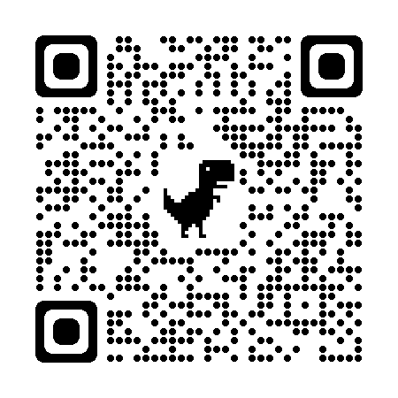

<ion-header [translucent]="true">
  <ion-toolbar>
    <ion-buttons slot="start">
      <ion-back-button defaultHref="/"></ion-back-button>

    </ion-buttons>
  </ion-toolbar>
</ion-header>


<ion-content [fullscreen]="true">
  <div class="container">
    <ion-card>
      
      <br> <br>
      <div class="container">
        <ion-button color="warning" expand="block" (click)="openActionSheet()">Escanear Código QR</ion-button>
        <ion-action-sheet
          *ngIf="showActionSheet"
          header="Desea permitir que se utilice la cámara">
        </ion-action-sheet>
      </div>

      <ion-button *ngIf="showImage" expand="block"  fill="outline" color="primary" (click)="SalidaAlumno()">Confirmar Asistencia</ion-button>
    </ion-card>
  </div>
</ion-content>


